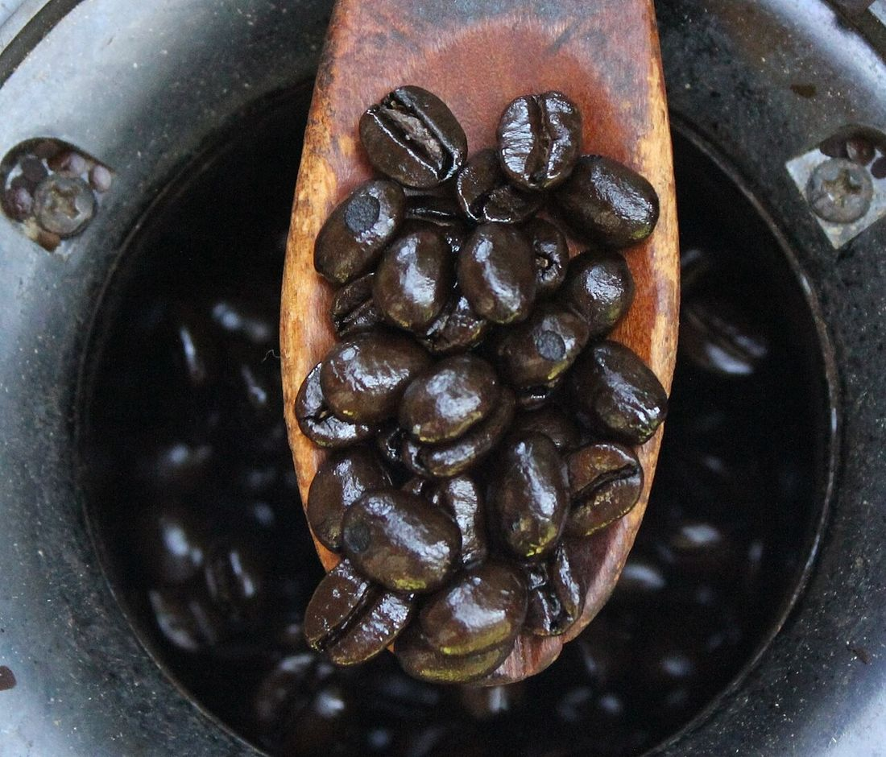

台北老店．中山與東區
Fika Fika 陳志煌
北歐有一場烘豆比賽，沒有評審，由兩百多位業界人士盲測投票。二〇一三年，拿下冠軍的是一位台灣人。

他叫陳志煌，Fika Fika Cafe 的創辦人，把北歐淺焙帶進台灣。
第二次就打破連勝
二〇一二年第一次參加北歐盃烘豆大賽，拿第四名。隔年再去，打破挪威人的連勝紀錄，拿下濃縮組冠軍和總冠軍。
其實他大學時就開始進口生豆，在網路上教人烘豆。
伊通公園旁的淺焙
二〇一二年底，他在伊通公園旁開了 Fika Fika Cafe。後來入選亞洲 50 大咖啡館。
二〇一六年吳則霖拿下世界咖啡師冠軍，比賽用的藝伎豆，就是陳志煌烘的。
以母親為名
二〇二四年，他在同一條街開了新店「秀香」，用的是母親的名字，紀念她當年的鼓勵和資助。
專業點：烘焙度怎麼看
・常用艾格壯（Agtron）數值，數字越高越淺
・淺焙：保留產區的果香、花香
・深焙：巧克力、焦糖、煙燻這類烘焙風味
・「淺焙必酸、深焙必苦」只說對一半，看烘豆師的功力
老照片與街景

店家資訊
- 店家
- Fika Fika Cafe
- 地點
- 台北市中山區伊通街33號（伊通公園旁）
- 現況
- 出發前先確認
- 營業時間
- 常有變動，出發前請再確認
- IG 影片
- 1/1 上片
你是淺焙派還是深焙派？留言投票。
到 IG 留言告訴我們
到 IG 留言告訴我們